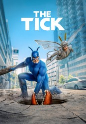

")
 
 IMDB-Wertung: 7.4 / 10
IMDB-Wertung: 7.4 / 10  Metascore:
Metascore: 
Der blaue Superheld mit den markanten Antennen auf dem Kopf ist zurück: The Tick (Peter Serafinowicz) erholt sich von einem Gedächtnisverlust und findet danach wieder mit seinem Sidekick Arthur (Griffin Newman) zusammen, um erneut gegen das Böse zu kämpfen.In einer Welt, in der Superhelden zum Alltag gehören, entdeckt ein Buchhalter mit psychischen Problemen und null Superkräften, dass ein längst totgeglaubter Superschurke seine Stadt beherrscht. Um diese Verschwörung aufzudecken schließt er ein Bündnis mit einem merkwürdigen blauen Superhelden.
Jahr: 2017
Dauer: 28 Minuten
FSK:
Land: USA Studio: Amazon StudiosTonspuren:
Untertitel: Deutsch, Englisch,
Auflösung: 720p (1280x534) Größe: 12083 MB
Genre: Action, Komödie, TV-Serie
Regisseur: Wally Pfister, Romeo Tirone, Kate Dennis, Sheree Folkson, Lev L. Spiro, Thor Freudenthal, Rosemary Rodriguez
Drehbuch: Ben Edlund
Soundtrack:
Darsteller:
 Peter Serafinowicz als The Tick
Peter Serafinowicz als The Tick Jackie Earle Haley als The Terror
Jackie Earle Haley als The Terror John Pirkis als Dr. Karamazov
John Pirkis als Dr. Karamazov Devin Ratray als Tinfoil Kevin
Devin Ratray als Tinfoil Kevin Alan Tudyk als Dangerboat
Alan Tudyk als Dangerboat Patricia Kalember als Joan
Patricia Kalember als Joan Bryan Greenberg als Derek
Bryan Greenberg als Derek Geoffrey Cantor als Agent Adams
Geoffrey Cantor als Agent Adams François Chau als Walter
François Chau als Walter Joanna Adler als Dr. Creek
Joanna Adler als Dr. Creek Townsend Coleman als Midnight
Townsend Coleman als Midnight Whoopi Goldberg als Whoopi Goldberg
Whoopi Goldberg als Whoopi Goldberg Brett Azar als Mighty Seaman
Brett Azar als Mighty SeamanDatei: X:\Comic-Serien\Tick, The\Tick S01\The Tick 2016 S01E01 Der Ruf des Schicksals.mkv seit 13.10.2017
Festplatte: Comicverfilmungen+MusikCD
 Es gibt insgesamt 34 Filme in der Gruppe 'Comic-Serien'
Es gibt insgesamt 34 Filme in der Gruppe 'Comic-Serien'